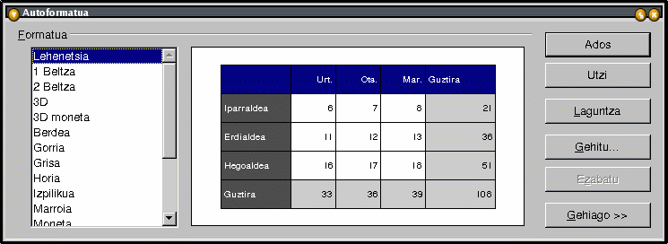

| ||
Nola formateatu kalkulu-orria
OpenOffice.org dokumentazio-proiektuaren eskutik
Edukien aurkibidea:
- Estilo bat aplikatzea:
- gelaxkari
- orrialdeari
- Autoformatua erabiltzea
- Gaiak erabiltzea
- Kredituak
1. Estilo bat aplikatzea
A. -- gelaxkari
Ireki Estilista:
-
Aukeratu Formatua - Estilista,
-
edo sakatu F11,
-
edo egin klik Funtzio-barrako
 ikonoan.
ikonoan.
Estilista leihoaren barruan, erabiltzeko prest dauden zenbait estilo dituzu. Lehenetsia hauta dezakezu, zuk nahi bezala moldatzeko:
-
hautatu Estilo lehenetsia
-
laster-menua ikusteko, egin klik eskuineko botoian
-
aukeratu Aldatu...

Leiho horren barnean, gelaxkak formateatzeko eta letra-tipoak, lerrokatzea nahiz zenbakiak aukeratzeko behar dituzun fitxa guztiak daude. Horregatik, bada, horixe dugu fitxarik erabiliena.
Ikus dezagun Zenbakiak fitxako Moneta ezarpena. Zein monetarekin lan egin nahi duzun hauta dezakezu hemen. Jarraian, kategoria horretan klik eginez gero zer agertuko zaizun ikus dezakezu:

Formatua izeneko koadro bat bistaratuko da. Moneta hautatzen duzunean, adibide bat agertuko zaizu eskuinean. OOo Suiteko aukera orokorretan lehenetsitako hizkuntza bera izango du.
'Aukerak' sailean, bistaratu nahi dizun dezimal-kopurua, zenbaki negatiboen kolorea, etab. aukeratu ahal izango dituzu.
Aukerak egiten dituzunean, egin klik Ados botoian, eta Estilo Lehenetsiarekin formateatutako gelaxka guztiak ezarpen berrien arabera aldatuko dira.
Oharra: Ez baduzu gelaxkaren baten estiloa onartu nahi, hauta ezazu eta Lehenetsi estandarra aldatu beharrean, aukeratu Berria...., laster-menuan (eskuineko sagu-botoia sakatuta irekiko da) Bide horretatik, zuk zeuk egindako estiloa sortu ahal izango duzu. Errepikatu estilo Lehenetsia aldatzeko azaldu ditugun urratsak. Ondoren, jar iezaiozu izena estilo berriari Antolatzailea fitxan, eta sakatu Ados, estilo berria Estilistaren leihoan ager dadin. Gelaxka batean aplikatzeko, koka ezazu kurtsorea gelaxka barnean, eta egin klik bikoitza Estilistako estiloaren izenean.
B. -- orrialdeari
Oraingoan ere, Estilistaren barnean jazoko da guztia.
-
'Orrialde-estiloak' koadroa irekitzeko, egin klik Estilistako bigarren ikonoan.
-
Egin klik estilo 'Lehenetsia'n eskuineko botoiarekin, eta aukeratu Aldatu...
-
Agertuko den leihoak fitxa berri batzuk izango ditu:

Gogoratu: orrialde honetantxe jar ditzakezu bai orriaren goiburukoa eta orri-oina bai eta atzeko planoaren kolorea ere. Bertako fitxa batzuk aurreko prozeduran topatu ditugun berberak direnez, ez ditugu berriz ere azalduko.
Kontu egin, Orrialdea fitxari:
- Paper Formatua atalean, inprimatzean erabiliko den paper-mota aukeratzeaz gain, orientazioa ere hautatu ahal izango duzu. Eskuinaldean agertzen den orriak egin dituzun aldaketak erakusten ditu, aurrebista txiki batean,
- Marjinak atalean, berriz, marjinen neurriak ezarriko dituzu. Marjinek inprimatze-area gainditzen badute, mezu bat agertuko zaizu horren berri emateko.
- Diseinuaren ezarpenak ataleko 'Orrialde-diseinuan', gelaxken edukia nola lerrokatu erabaki ahal izango duzu. Aukeratu!
Azter dezagun orain beste fitxa interesgarri bat: Orria.

Ez du azalpen handirik behar, Eskala atalak izan ezik, ilun samarra baita:
-
''Txikitu/handitu inprimatutakoa' aukeraren bidez, orriaren inprimatze-irudiaren tamaina handitu edo txikitu dezakezu.
-
''Doitu inprimatutakoa orrialde-kopuru honetara:' aukeraren bidez, kalkulu-orria zenbat orrialdetan inprimatu nahi duzun adieraz dezakezu. Orrien tamaina adierazitako orri-kopurura egokituko da.
2. Autoformatua erabiltzea
Oharra: eginbide hau erabiltzeko, gelaxka-area bat nabarmendu behar duzu; izan ere, funtzio honek ez du soilik gelaxka batentzat edo birentzat balio; aitzitik, areentzat erabiltzen da.
Formateatzeko, Formatua menuko 'Autoformatua' hauta dezakezu, edo, bestela, klik egin ikono honetan:  pantailaren ezkerraldeko tresna-barran topatuko duzu.
pantailaren ezkerraldeko tresna-barran topatuko duzu.

Sinestezina! Aurkezpen-lan guztia automatikoki egin dela dirudi! :-)
Nahi duzuna aukeratzeko, formatu-izen batean klik egin besterik ez duzu!
Zuk zeuk ere sor ditzakezu formatuak, jakina (ikus eskuineko Gehitu.... botoia), eta, gero, nahi izanez gero, ezabatu egin ditzakezu, esaterako, uneko modarekin bat ez datozela ikusten baduzu!
Gehiago sakatzean, formateatzeko aukera gehiago agertuko zaizkizu. Aldatzen badituzu, Autoformatua leihoko aurrebistan ikusi ahal izango duzu emaitza.
Oharra: Autoformatu-ekintzaren bat desegin nahi baduzu, hautatu estiloa aplikatu diozun area, egin klik eskuineko botoiaz bertan laster-menua agertzeko, eta aukeratu 'Lehenetsia'.
3. Galeriako gaiak erabiltzea
Gelaxka-estiloen multzoak dira Gaiak; beren ezarpenak finkoak dira, baina estilo trukagarriak dituzte.
Honela egiten dute lan:
- ireki Galeria
- egin klik ezkerreko tresna-barrako 'Aukeratu gaiak' botoian. Autoformatuaren ikonoaren azpian dago.
- aukeratu 'Jeans' gaia hautapen-leihoan,
- begiratu Estilistan agertzen diren gelaxka-estilo pertsonalizatuei,
- aukeratutako gaiaren arabera aldatuko da orrialdea,
- hautapen-leihoa ixteko, egin klik Ados botoian,
- ondoren, egin klik gelaxka-estiloan, nola geratu diren ikusteko, eta alda itzazu, beste orrialdekatze bat nahi izanez gero.
Halaxe da, bai; gaiak erabili ahal izateko, beharrezkoa da kontzeptuak apur bat menderatzea, baina oso erraz ikas daiteke!
4. Kredituak
Egilea: Sophie Gautier
Eskerrak: Richard Holt-i (zuzentzailea eta OOo-ko laguntzailea)
Integrazioa: Gianluca Turconi
Azken aldaketa: 2002ko otsailaren 18a
Kontaktuak: OpenOffice.org dokumentazio-proiektuahttp://whiteboard.openoffice.org/doc/
Itzulpena: Eusko Jaurlaritzako Hizkuntza Politikarako Sailburuordetza (hizkpol@ej-gv.es)
| | ||